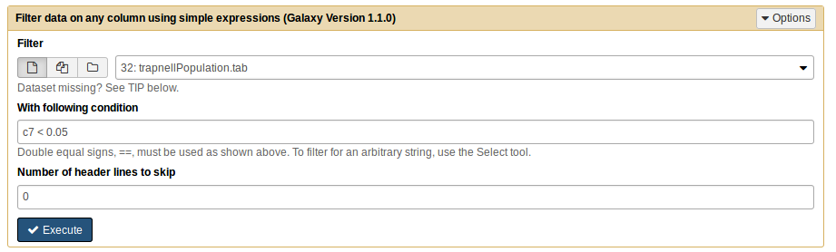
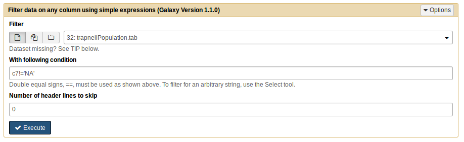
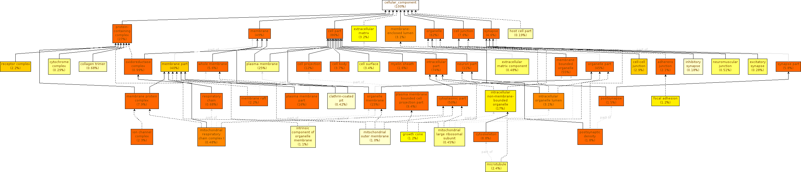
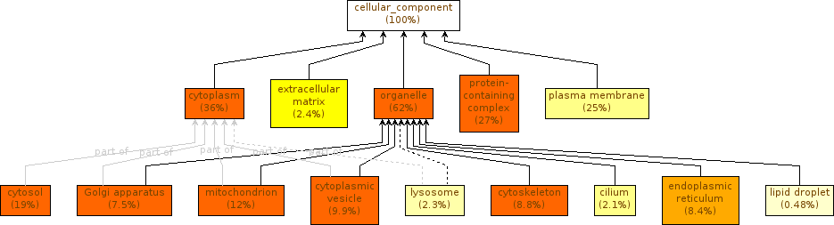

When we have a large list of genes of interest, such as a list of differentially expressed genes obtained from an RNA-Seq experiment, how do we extract biological meaning from it?
One way to do so is to perform functional enrichment analysis. This method consists of applying statistical tests to verify if genes of interest are more often associated to certain biological functions than what would be expected in a random set of genes. In this tutorial you will learn about enrichment analysis and how to perform it.
What is the Gene Ontology?
The Gene Ontology (GO) is a structured, controlled vocabulary for the classification of gene function at the molecular and cellular level. It is divided in three separate sub-ontologies or GO types: biological process (e.g., signal transduction), molecular function (e.g., ATPase activity) and cellular component (e.g., ribosome). These sub-ontologies are structured as directed acyclic graphs (a hierarchy with multi-parenting) of GO terms.
The GO Ontology, like other ontologies, are usually coded in the OBO or the OWL formats. It can be downloaded from the Gene Ontology website or from the OBO foundry. You can also find in Galaxy tools that allow you to manipulate and extract information from OBO files, but this is outside the scope of this tutorial.
Comment
Take note of when and where you obtained your ontology file, as these are constantly being updated.
What are GO annotations?
Genes are associated to GO terms via GO annotations. Each gene can have multiple annotations, even of the same GO type. An important notion to take into account when using GO is that, according to the true path rule, a gene annotated to a term is also implicitly annotated to each ancestor of that term in the GO graph. GO annotations have evidence codes that encode the type of evidence supporting them: only a small minority of genes have experimentally verified annotations; the large majority have annotations inferred electronically based on sequence homology or known patterns.
GO annotations can be obtained from the Gene Ontology website, or from species-specific databases. One useful resource to obtain GO annotations is Ensembl biomart. Again, take note to when and from where you obtained your annotations. For example, if you obtained your data from Ensembl, record the release you used.
To perform functional enrichment analysis, we need to have:
A set of genes of interest (e.g., differentially expressed genes): study set
A set with all the genes to consider in the analysis: population set (which must contain the study set)
GO annotations, associating the genes in the population set to GO terms
The GO ontology, with the description of GO terms and their relationships
For each GO term, we need to count the frequency (k) of genes in the study set (n) that are associated to the term, and the frequency (K) of genes in the population set (N) that are associated to the same term. Then we test how likely would it be to obtain at least k genes associated to the term if n genes would be randomly sampled from the population, given the frequency K and size N of the population.
The appropriate statistical test is the one-tailed variant of Fisher’s exact test, also known as the hypergeometric test for over-representation. When the one-tailed version is applied, this test will compute the probability of observing at least the sample frequency, given the population frequency. The hypergeometric distribution measures precisely the probability of k successes in n draws, without replacement, from a finite population of size N that contains exactly K successful objects:
For this first exercise we will use data from Trapnell et al. 2014. In this work, the authors created an artificial dataset of gene expression in Drosophila melanogaster, where 300 random genes were set (insilico) to be differentially expressed between two conditions.
Hands-on
The data for this tutorial is available at Zenodo to download. For convenience and reproducibility of results, we already added the GO ontology and annotations in the Zenodo repository.
Create a new history
To create a new history simply click the new-history icon at the top of the history panel:
Upload to the Galaxy the following files:
go.obo
drosophila_gene_association.fb
trapnellPopulation.tab
Click on the upload button in the upper left of the interface.
The study set represents the differentially expressed genes. These were chosen as having an adjusted p-value for the differential expression test (last column) smaller than a given threshold. In this case, we want to select the genes with an adjusted p-value < 0.05.
Filter data on any column using simple expressionstool with the following parameters:
param-file“Filter”: trapnellPopulation.tab
param-text“With following condition”: c7 < 0.05
This generates one file. Rename it to trapnellStudy.
Comment
Both files have the same type of information, the difference between them being the number of genes, as the genes in the study sample are a subset of the population.
GOEnrichmenttool with the following parameters:
param-file“Gene Ontology File”: GO
param-file“Gene Product Annotation File”: Go Annotations Drosophila melanogaster
param-file“Study set File”: trapnellStudy
param-file“Population set File”: trapnellPopulation.tab
This will generate 6 files with the respective default names: goenrichment on trapnellStudy MF Table', goenrichment on trapnellStudy BP Table’, goenrichment on trapnellStudy MF Table', goenrichment on trapnellStudy MF Graph’, goenrichment on trapnellStudy BP Graph' and goenrichment on trapnellStudy CC Graph’. The three Table files list the results of the statistical test for each GO Term, ordered by p-value, and the three Graph files are image files displaying a graph view of the enriched GO terms.
Comment
For each GO term we obtain a p-value corresponding to a single, independent test. Since we are making multiple similar tests, the probability of at least one of them being a false positive increases. Therefore we need to make a correction for multiple testing.
Question
How many significant terms do we get?
When we ask how many significant terms, we want to see GO terms that have a p-value < 0.05. According to the results, for Molecular Function we have 5 GO terms, Biological Process we have 43 GO terms and Component Cellular we have 10 GO terms.
If you press the galaxy-eye (eye) icon of the Molecular Function file (MF Trapnell) you should see something like this:
The ~300 genes should be random, so we wouldn’t expect to see any enriched term. Nonetheless we still have significant terms.
Comment
Let’s go back a little bit, and reopen the trapnellPopulation.tab file. If you go through the file, you’ll see genes with ‘NA’ as an adjusted p-value. This means that there are genes in our background population for which the differential expression test was not even performed (usually genes that were not expressed in any sample). These genes are irrelevant for this functional enrichment analysis. We also need to note that the study set does not include those genes!
Let’s remove the irrelevant genes from the background population (trapnellPopulation.tab), to see the differences in results.
Hands-on
Filter data on any column using simple expressionstool with the following parameters:
param-file“Filter”: trapnellPopulation.tab
param-text“With following condition”: c7 != 'NA'
This generates one file. Rename to trapnellFilteredPopulation.
GOEnrichmenttool with the following parameters:
param-file“Gene Ontology File”: GO
param-file“Gene Product Annotation File”: Go Annotations Drosophila melanogaster
param-file“Study set File”: trapnellStudy
param-file“Population set File”: trapnellFilteredPopulation
Rename all 6 output files by appending FilteredPop to the name, to distinguish them from the previous outputs.
Let’s check the new graph goenrichment on trapnellStudy MF Graph FilteredPop.
Question
How many significant terms do we get now?
Why do you see these differences?
According to the results, in Molecular Function and Biological Process we have 0 GO terms and Component Cellular just 1 GO term.
The background population genes that we removed are not random, they are usually genes that are expressed in specific conditions, tissues or time points. If they are included in the test, we will obtain false enrichments, as we saw.
Simplification of graphs
Graphical views are essential, but sometimes the graph view can become overwhelming due to the size of the results. To exemplify this issue, we will next perform functional enrichment analysis using a more realistic dataset from a study using the mouse model organism. The original dataset can be found on NCBI. In this study, the authors compared the gene expression of several tissues. Here, we will use results from the comparison between heart and brain.
Hands-on
For the first exercise we will use as a study set the differential genes (padjusted<0.05).
Upload to Galaxy the mouse_brain_vs_heart.txt, Mus_musculus_annotations_biomart_e92.tab and mouse_brain_vs_heart.difgenes.txt files.
Rename the mouse_brain_vs_heart.txt file to Mouse population, Mus_musculus_annotations_biomart_e92.tab file to GO annotations Mus musculus and mouse_brain_vs_heart.difgenes.txt file to Mouse diff.
GOEnrichmenttool with the following parameters:
param-file“Gene Ontology File”: GO
param-file“Gene Product Annotation File”: GO annotations Mus musculus
This will generate 6 files with the names: goenrichment on Mouse diff MF Table, goenrichment on Mouse diff BP Table, goenrichment on Mouse diff CC Table, goenrichment on Mouse diff MF Graph, goenrichment on Mouse diff BP Graph and goenrichment on Mouse diff CC Graph.
Analyze the table and graph from Biological Process.
Comment
As you can see the three graphs are very complex and difficult to analyze.
As you see, the number of enriched GO Terms is very high, with graphs that are too extensive to analyze manually. And this is despite the fact that GOEnrichment ignores singletons and skips dependent tests by default, precisely to avoid enrichment results that are too extensive and not informative.
The Summarize Output option in the GOEnrichment tool addresses this problem by conflating branches/families of enriched GO terms and selecting the most representative term(s) from them (usually 1-2 term per family). The greatly simplifies the results while retaining branch information, and thus ensuring that every enriched family of functions is present in the results. Some specificity is necessarily lost, but the trade-off is that the results become easier and more intuitive to analyze.
Hands-on
GOEnrichmenttool with the following parameters:
param-file“Gene Ontology File”: GO
param-file“Gene Product Annotation File”: GO annotations Mus musculus
param-file“Study set File”: Mouse diff
param-file“Population set File”: Mouse population
Use the default options for the rest (notice that by default the Summarize Option is on).
Analyze again the table and graph from Biological Process.
Are there differences in complexity comparing the graph with and without the summarize output option?
Yes, there are differences. As you can see, the activation of the Summarize option reduces the size of the graph because this parameter causes families of GO terms to be conflated. Each major branch in the full results is still present in the summarized results, but now is reduced to 1 or 2 most representative terms, leading to a graph that is much easier to interpret while still containing all the key functional information.
Another approach to reduce the complexity of the results is to use a shallower version of GO, the GO slims. GO slims are transversal cuts of GO that cover all key branches but lack specific terms. Thus, using them leads to much simpler results than using the full GO, but also leads to a substantial loss in specificity, which is greater than that of the Summarize Output option. You can download slimmed versions of GO from the Gene Ontology website.
To test the GO slim approach, let us use the mouse dataset again. First, however, we need to use GOSlimmer tool to convert the annotations file from full GO to GO slim (as GO annotations are typically made to terms that are too specific to be in the GO slim, and thus need to be extended by the true path rule).
Hands-on
Upload to the Galaxy the goslim_generic.obo file.
Rename the goslim_generic.obo file to GO Slim.
Run GOSlimmertool with the following parameters:
param-file“Full Gene Ontology File”: GO
param-file“GOSlim File”: GO Slim
param-file“Gene Product Annotation File”: GO annotations Mus musculus
What differences do you observe when comparing the results obtained with the GO Slim to those obtained with the full GO, with the Summarize Output option?
Component Cellular with full GO
Component Cellular with GO Slim

The differences that you observe are due to the ontology used. When we apply the summarize option with the full GO, the GOEnrichment tool will return a summarized output (as we have seen previously). When we opted for GO Slim, the original annotation was already summarized, resulting in an even more summarized output, but with a consequent loss of specificity.
Interpretation of the results
The interpretation of the results will depend on the biological information that we intend to extract. Enrichment analysis can be used in validation (e.g., of a protocol for extracting membrane proteins), characterization (e.g., of the effects of a stress in a organism) and elucidation (e.g., of the functions impacted by the knock-out of a transcription factor).
There is one important point to keep in mind during the analysis: statistically significant is different from biologically meaningful. That said, it is typically possible to obtain some biological or technical insight about the underlying experiment from statistically enriched terms, even if it isn’t readily apparent.
Terms that are very generic tend to be difficult to interpret, because the meaning they convey is shallow. On the other hand, very specific terms are generally not integrative and thus not useful in interpreting a gene set collectively. The interesting terms are those that are sufficiently specific to transmit substantial biological meaning, yet generic enough to integrate multiple genes.
For the second exercice, we will continue to work with the same study set as before but now we analyze separately genes that are over- and under-expressed, and see the enriched GO terms presents in the brain and heart from the mouse.
Hands-on
Upload to Galaxy the mouseOverexpressed.txt and the mouseUnderexpressed.txt files.
Comment
The differentially expressed genes can be identified using the adjusted p-value (also known as FDR). The logFC values indicate whether genes are more expressed (logFC>0) or less expressed (logFC<0) in one condition when comparing with another condition.
GOEnrichmenttool with the following parameters for the both study files (mouseOverexpressed.txt and the mouseUnderexpressed.txt).
Use the GO, the GO annotations Mus musculus and the Mouse population files.
This will generate 12 files, 6 for each sample file, like in previous cases.
Question
Analyze both Biological Process tables. According to the study, which tissues are over- and underexpressed?
The samples correspond to the expressions that occur in the tissues referring to the brain and heart, so the results in the tables (and also in the graphs) should correspond to the specific functions of each organ. When we analyze the tables of enriched functional terms, we can see that the results from underexpressed genes reveal functions related to the brain. While in the case of the genes overexpressed, we identify functions related to muscle / heart function.
Conclusion
Functional enrichment is a good way to look for patterns in gene lists, but interpretation of results can become a complicated process. One way to reduce this complexity is to use the GOEnrichment tool. This tool not only performs the GO Enrichment test, showing us enriched GO terms from our sets, but also contains functionality to simplify the results and make them more easily interpretable. Independently of this, we need to be careful when choosing our genes of interest, but also the background set of genes against which we want to compare.
You've Finished the Tutorial
Please also consider filling out the Feedback Form as well!
Key points
The goenrichment tool can be used to perform GO Enrichment analysis
One needs to be careful when chosing the background population
There are several methods to simplify the output of the GO Enrichment analysis
Further information, including links to documentation and original publications, regarding the tools, analysis techniques and the interpretation of results described in this tutorial can be found here.
Feedback
Did you use this material as an instructor? Feel free to give us feedback on how it went.
Did you use this material as a learner or student? Click the form below to leave feedback.
Hiltemann, Saskia, Rasche, Helena et al., 2023 Galaxy Training: A Powerful Framework for Teaching! PLOS Computational Biology 10.1371/journal.pcbi.1010752
Batut et al., 2018 Community-Driven Data Analysis Training for Biology Cell Systems 10.1016/j.cels.2018.05.012
@misc{transcriptomics-goenrichment,
author = "IGC Bioinformatics Unit and Maria Doyle",
title = "GO Enrichment Analysis (Galaxy Training Materials)",
year = "",
month = "",
day = ""
url = "\url{https://training.galaxyproject.org/training-material/topics/transcriptomics/tutorials/goenrichment/tutorial.html}",
note = "[Online; accessed TODAY]"
}
@article{Hiltemann_2023,
doi = {10.1371/journal.pcbi.1010752},
url = {https://doi.org/10.1371%2Fjournal.pcbi.1010752},
year = 2023,
month = {jan},
publisher = {Public Library of Science ({PLoS})},
volume = {19},
number = {1},
pages = {e1010752},
author = {Saskia Hiltemann and Helena Rasche and Simon Gladman and Hans-Rudolf Hotz and Delphine Larivi{\`{e}}re and Daniel Blankenberg and Pratik D. Jagtap and Thomas Wollmann and Anthony Bretaudeau and Nadia Gou{\'{e}} and Timothy J. Griffin and Coline Royaux and Yvan Le Bras and Subina Mehta and Anna Syme and Frederik Coppens and Bert Droesbeke and Nicola Soranzo and Wendi Bacon and Fotis Psomopoulos and Crist{\'{o}}bal Gallardo-Alba and John Davis and Melanie Christine Föll and Matthias Fahrner and Maria A. Doyle and Beatriz Serrano-Solano and Anne Claire Fouilloux and Peter van Heusden and Wolfgang Maier and Dave Clements and Florian Heyl and Björn Grüning and B{\'{e}}r{\'{e}}nice Batut and},
editor = {Francis Ouellette},
title = {Galaxy Training: A powerful framework for teaching!},
journal = {PLoS Comput Biol} Computational Biology}
}
Congratulations on successfully completing this tutorial!
You can use Ephemeris's shed-tools install command to install the tools used in this tutorial.
3 stars:
Liked: As a new hand and being not literate at coding, this step-by-step tutorial is what i really needed. Especially the provided data sets.
Disliked: Because I am very new, once the results is not what I should see, I was totally lost. E.g. after running the GOEnrichment tool, next is "Analyze again the table and graph from Biological Process". Here I was lost. I suppose to do more analysis? I suppose I can visualize the CC, MF, BP graphs through the eye icon, only the top of the graph (100%BP) showed up. The rest of the ontology was invisible. I was lost again. I posted this question on the Galaxy Help. I realized that it might be a stupid question. I am very new to this, for which I apologize.
June 2021
3 stars:
Liked: Quite clear overall
Disliked: There is no way to find out the p-values corresponding to the different colors, the meaning of the dotted and solid arrows, etc. Please add those information if you want to make your plots more comprehensible!
January 2021
5 stars:
Disliked: This tutorial would benefit from the addition of an updated data import section for the Zenodo inputs. Seems like a good candidate for a Co-Fest GTN+Papercuts contribution (should be quick to do + examples in other tutos). reminder @jennaj
July 2020
5 stars:
Liked: exercises
Disliked: use data starting from scratch instead of already prepared data
March 2020
1 stars:
Liked: easy to start and its not completely frustrating like the university slides. It's quite astonishing that our university can't provide clear instructions how stuff works but the platform that is aimed at scientists does a better job explaining it. Thanks a lot
Disliked: explanation part for hypergeometrical distribution is confusing me because the same words are used over and over again. maby include graphics to visualize the frequencies
March 2019
4 stars:
Liked: Nicely explained and easy to follow even with own data.
Disliked: There is no explanation of the graph (colours, %, arrows) and meaning of columns in tabular output (Study#, pvalue, qvalue). Would be nice to shortly describe this with one example GO term.
Questions:


{kind=link}
{kind=link}
{kind=link}
{kind=link}
{kind=link}
{kind=link}
{kind=link}
{kind=link}
{kind=link}
{kind=link}
{kind=link}
{kind=link}
{kind=link}
{kind=link}
{kind=link}
{kind=link}
{kind=link}